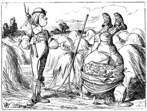

very gravely, 'I think, you ought to tell me who YOU are, first.'
'Why?' said the Caterpillar.
Here was another puzzling question; and as Alice could not think of any good reason, and as the Caterpillar seemed to be in a VERY unpleasant state of mind, she turned away.
'Come back!' the Caterpillar called after her. 'I've something important to say!'
This sounded promising, certainly: Alice turned and came back again.
'Keep your temper,' said the Caterpillar.
Is that all?' said Alice, swallowing down her anger as well as she could.
'No,' said the Caterpillar.
Alice thought she might as well wait, as she had nothing else to do, and perhaps after all it might tell her something worth hearing. For some minutes it puffed away without speaking, but at last it unfolded its arms, took the hookah out of its mouth again, and said,
So you think you're changed, do you?'
'I'm afraid I am, sir,' said Alice; 'I can't remember things as I used--and I don't keep the same size for ten minutes together!'
'Can't remember WHAT things?' said the Caterpillar.
'Well, I've tried to say "HOW DOTH THE LITTLE BUSY BEE," but it all came different!' Alice replied in a very melancholy voice.
'Repeat, "YOU ARE OLD, FATHER WILLIAM,"' said the Caterpillar.
Alice folded her hands, and began:--
'You are old, Father William,' the young man said, 'And your hair has become very white; And yet you incessantly stand on your head-- Do you think, at your age, it is right?'
In my youth,' Father William replied to his son, 'I feared it might injure the brain;